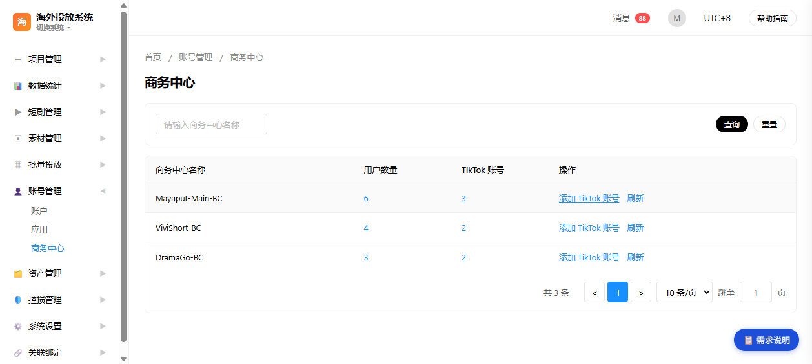
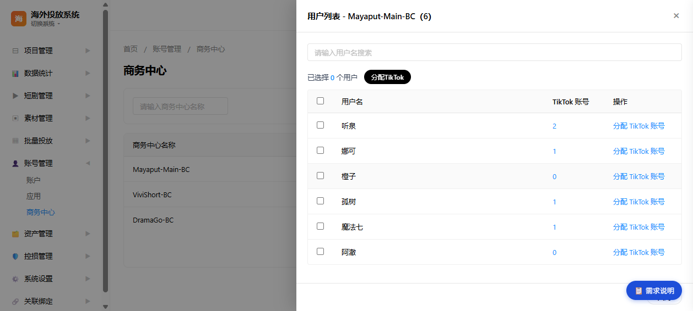
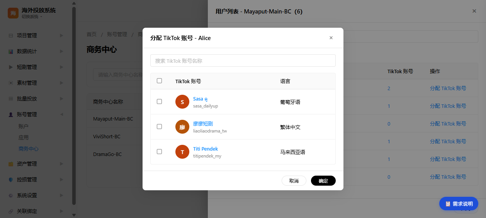
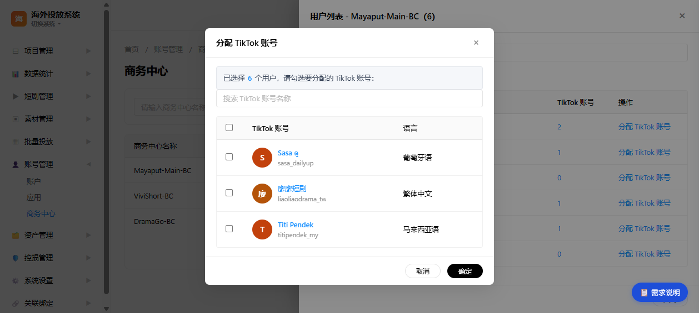
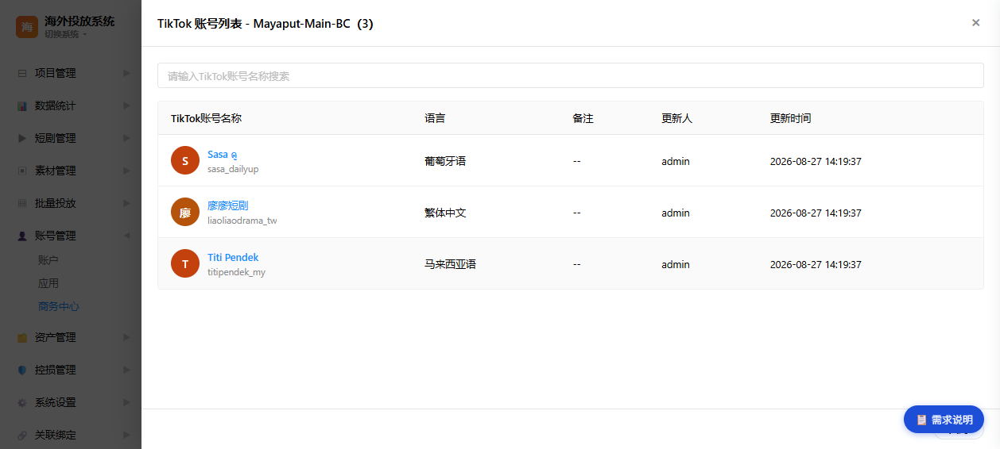
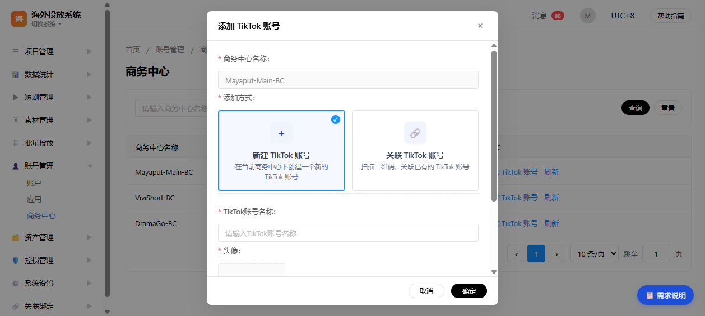
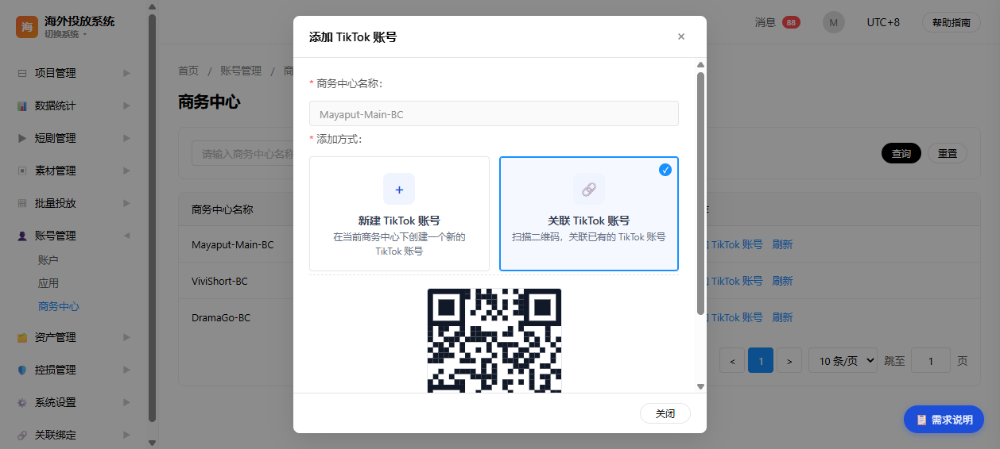

原型来源：
pages/overseas-bc.html（海外投放系统 - 账号管理 - 商务中心）
文档版本：v2.1
生成日期：2026-09-02
文档格式：Word（.docx）
海外投放系统面向短剧出海投放场景，基于 TikTok Business API 管理广告投放基础设施。商务中心（Business Center，下称 BC）是 TikTok 广告投放的核心组织单元，承载成员（用户）管理、TikTok 账号资产管理与权限分配。
本文档定义商务中心页面的功能需求、交互逻辑、数据筛选与接口依赖，作为原型评审、研发排期与测试验收的依据。文档覆盖 7 个核心用户故事、11 个功能点，并明确每个表格的数据来源与数据流转路径。
pages/overseas-bc.htmlstyles/main.css、scripts/main.js| 角色 | 说明 | 使用场景 |
|---|---|---|
| 投放运营/管理员 | 管理商务中心及其成员、TikTok 账号资产 | 查看商务中心成员、分配/撤销 TikTok 账号权限、添加 TikTok 账号 |
| 系统管理员 | 维护系统级数据 | 查看商务中心资产明细、排查账号归属 |
查询商务中心列表
├─→ 点击「用户数量」→ 打开用户列表抽屉
│ ├─→ 点击「TikTok 账号」数量 → 叠加打开 TikTok 账号列表抽屉（关闭后回到用户列表）
│ ├─→ 行内「分配 TikTok 账号」→ 单用户分配弹框（多选，已分配禁选）
│ └─→ 勾选用户 → 「分配TikTok」→ 批量分配弹框（多选，不区分已分配）
├─→ 点击「TikTok 账号」→ 打开 TikTok 账号列表抽屉
├─→ 点击「添加 TikTok 账号」→ 添加弹框（选择新建/关联，字段在弹框内展开）
└─→ 点击「刷新」→ 重新拉取并渲染当前列表
| 功能点 ID | 功能名称 | 所属页面/组件 | 优先级 | 说明 |
|---|---|---|---|---|
| F-001 | 商务中心列表查询 | 商务中心主页面 | P0 | 按名称筛选 + 查询/重置 |
| F-002 | 商务中心主表展示 | 商务中心主页面 | P0 | 名称/用户数量/TikTok账号/操作四列 |
| F-003 | 打开用户列表抽屉 | 用户列表抽屉 | P0 | 点击用户数量触发 |
| F-004 | 用户列表搜索 | 用户列表抽屉 | P1 | 按用户名实时过滤 |
| F-005 | 单用户分配 TikTok 账号 | 分配 TikTok 账号弹框 | P0 | 行内操作，多选，已分配禁选 |
| F-006 | 批量分配 TikTok 账号 | 批量分配弹框 | P0 | 勾选用户后批量分配 |
| F-007 | 查看 TikTok 账号列表 | TikTok 账号列表抽屉 | P0 | 点击 TikTok 账号数触发 |
| F-008 | TikTok 账号列表搜索 | TikTok 账号列表抽屉 | P1 | 按账号名称实时过滤 |
| F-009 | 添加 TikTok 账号（新建方式） | 添加 TikTok 账号弹框 | P0 | 填写名称/头像/国家地区 |
| F-010 | 添加 TikTok 账号（关联方式） | 添加 TikTok 账号弹框 | P0 | 二维码授权关联 |
| F-011 | 商务中心列表刷新 | 商务中心主页面 | P1 | 重新拉取并渲染列表 |
故事描述：作为投放运营，我想要查看并按名称搜索商务中心列表，以便快速定位目标商务中心。
筛选项（组件类型）
数据来源（调用接口）
数据流转
验收标准
界面截图

故事描述：作为投放运营，我想要打开某个 BC 的成员列表并搜索用户，以便定位目标成员。
筛选项（组件类型）
数据来源（调用接口）
数据流转
验收标准
界面截图

故事描述：作为投放运营，我想要为单个用户分配 TikTok 账号，以便授予其投放资产权限。
筛选项（组件类型）
数据来源（调用接口）
数据流转
验收标准
界面截图

故事描述：作为投放运营，我想要勾选多个用户后批量分配 TikTok 账号，以便提高分配效率。
筛选项（组件类型）
数据来源（调用接口）
数据流转
验收标准
界面截图

故事描述：作为投放运营，我想要查看某个 BC 的 TikTok 账号资产明细，以便了解资产情况。
筛选项（组件类型）
数据来源（调用接口）
数据流转
验收标准
界面截图

故事描述：作为投放运营，我想要在 BC 下新建 TikTok 账号，以便扩充资产。
筛选项（组件类型）
数据来源（调用接口）
数据流转
验收标准
界面截图

故事描述：作为投放运营，我想要通过扫码关联已有 TikTok 账号，以便复用已有资产。
筛选项（组件类型）
数据来源（调用接口）
数据流转
验收标准
界面截图

| 用户故事 | 筛选/表单场景 | 组件类型 | 交互说明 |
|---|---|---|---|
| US-001 | 商务中心名称查询 | input[type=text] + 按钮 | 占位提示「请输入商务中心名称」，支持查询/重置 |
| US-002 | 用户名搜索 | input[type=text] | 输入即实时过滤，oninput 事件 |
| US-003 | 账号搜索 | input[type=text] + checkbox | 输入实时过滤；列表首列复选框，表头全选 |
| US-004 | 账号搜索 | input[type=text] + checkbox | 输入实时过滤；列表首列固定复选框，表头全选 |
| US-005 | 账号搜索 | input[type=text] | 输入即实时过滤 |
| US-006 | 新建账号表单 | input + file + select | 名称文本、头像上传、国家/地区下拉 20 项 |
| US-007 | 关联账号授权 | 二维码展示组件 + 文本 | 只读授权对象信息，底部「关闭」按钮 |
| 功能/表格 | 调用接口 | 入参 | 官方文档 |
|---|---|---|---|
| 商务中心主表 | 获取商务中心列表 | 名称关键字（可选） | get-business-centers |
| 用户列表抽屉 | 获取商务中心成员列表 | BC ID | get-the-members-of-a-bc |
| TikTok 账号列表抽屉 | 获取资产列表 | BC ID | get-assets |
| 单用户/批量分配弹框 | 将资产分配给用户 | BC ID / 用户集合 / 账号集合 | assign-an-asset |
| 撤销已分配账号 | 撤销用户对资产的权限 | BC ID / 用户 / 账号 | unassign-an-asset |
| 新建 TikTok 账号 | 在商务中心创建 TikTok 账号 | BC ID / 名称 / 头像 / 地区 | create-an-organization-account-in-a-business-center |
| 关联 TikTok 账号 | 获取 TikTok 账号授权链接 | BC ID | obtain-a-tiktok-account-ad-delivery-authorization-url |
页面初始化或点击「刷新」时，前端调用「获取商务中心列表」，后端返回当前可见商务中心集合（含名称、用户数量、TikTok 账号数量）。前端渲染主表后，用户数量与 TikTok 账号数量作为打开抽屉的入口参数。
点击「用户数量」→ 携带 BC ID 调用「获取商务中心成员列表」→ 渲染用户列表。搜索框在本地对可见行做包含匹配，不影响已勾选状态（batchSelectedUsers）。
打开弹框时携带 BC ID（批量场景额外携带所选用户集合）→ 调用「获取资产列表」→ 渲染可选账号。用户勾选后点击「确定」→ 调用「将资产分配给用户」。单用户场景后端根据已分配关系设置禁用态；批量场景由后端逐一判断账号是否已分配。
新建：弹框内完成前端校验后调用「在商务中心创建 TikTok 账号」→ 成功后关闭弹框 → 重新拉取资产列表。关联：选择关联卡片后调用「获取 TikTok 账号授权链接」→ 渲染二维码 → 用户扫码授权 → 系统回传结果 → 刷新资产列表。